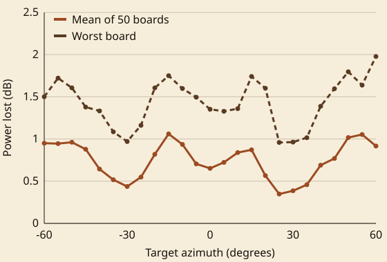
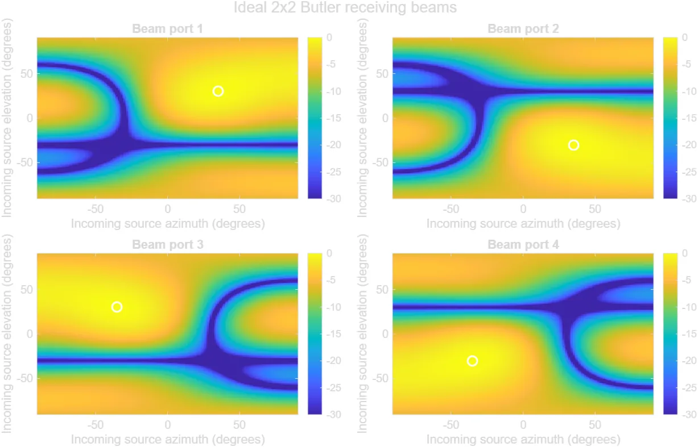

RF direction finder and Butler matrix
An antenna array that estimates the direction a 5.8 GHz signal arrives from, then points its beam there. The results so far are simulations in MATLAB. A receive board is designed and not yet built.
UT Dallas RIDE course, September 2026 to now, three students. I wrote the MATLAB models and experiments, most of the reports and about half the commits. MATLAB and LaTeX.
Finding the direction
A signal at 5.8 GHz reaches each antenna in an array at a slightly different time. The delay between neighbours is the only clue to the direction, so the phase at every antenna has to be measured together.
Four separate receivers cannot do that cheaply. Each has its own clock and a random phase offset at every power-up, so the differences between them mean nothing. Purpose-built direction finders use a shared clock and calibration hardware. The course budget is $100 per group.
The first plan avoided the problem with a Butler matrix, a passive network that forms several fixed beams. A power detector then only reads the signal strength on each beam port, with no shared clock and no phase calibration. The course also asked for software, theory and simulation first, so the results below are all simulated.
How it works
A wave arriving at angle θ travels a little further to each next antenna. With spacing d the phase step between neighbours is 2πd sin(θ)/λ. At half-wavelength spacing, 25.844 mm at 5.8 GHz, a source at 30 degrees gives 90 degrees. The simulation returned 90.00.
Find
A direction finder (beamscan, MVDR or MUSIC) turns the measured phase steps into an angle.
Steer
The same equation run backwards. Each antenna gets the opposite phase, so the signals add in step toward the target.
Butler matrix
A Butler matrix skips the finding. It makes four fixed beams, a detector reads the power on each port, and the loudest port is the direction.
The plot below runs this loop on a four-element line with the standard array formulas. Click the plot to move the signal. Port 1 to 4 show the four fixed beams of a 4-port Butler matrix, with phase steps of -135, -45, +45 and +135 degrees.
Auto: beam locked on the beacon at +25.0 degrees.
Simulation results
The first array was a line of four antennas. A line cannot tell a source above it from one below it, so the project moved to a grid, which measures phase along two axes and returns azimuth and elevation. A source at azimuth 30 and elevation 20 came back as 30.0 and 20.0. The 2x2 grid has four antennas. The 4x4 grid has sixteen.
| 2x2 | 4x4 | |
|---|---|---|
| Error at 20 dB, azimuth 30, elevation 20 | 0.15 deg | 0.03 deg |
| Azimuth error at 20 dB, broadside | 0.10 deg | 0.022 deg |
| Source lost at about | -5 dB | -15 dB |
| Azimuth beamwidth | 60 deg | 26 deg |
| First sidelobe | none | 11.3 dB below the main lobe |
| Closest two sources separated by MUSIC | 14 deg, if they differ along both grid axes | about 4 deg, also on one axis |
| One coherent echo, MUSIC success | 0.14, or 0.98 with forward-backward averaging | finds both paths with every method |
The 4x4 error is 4.5 times smaller, which is what the accuracy formula predicts: a factor of 2 from having four times the elements, and 2.24 from the wider spread. Every 2x2 and 4x4 number can be regenerated from the MATLAB scripts with fixed random seeds.

Methods
On one source beamscan, MVDR and MUSIC tie. With two sources on a line array MUSIC separates them from 5 degrees apart, MVDR from 12 and beamscan from 40. A coherent echo drops MUSIC to 4 percent success on a line array while beamscan is unaffected. On the 2x2 the order flips: beamscan fails because its 60 degree beam cannot separate arrivals 57 degrees apart.
Spacing
At a full wavelength of spacing one source appears four times in the MUSIC map, where theory puts the copies. The elements therefore sit half a wavelength apart.
Tapering
Chebyshev weights at -20 dB give the best trade for a steered beam on the 4x4, at a cost of 4 to 8 degrees of beamwidth and 0.6 to 1.6 dB of gain. Steered to 30 degrees, no taper beats uniform weights near the edge.
Channel mismatch
On the 2x2, MUSIC stays near 0.15 degrees with up to 30 degrees of phase spread between channels when the array is calibrated against a source at broadside. Uncalibrated, 10 degrees of spread gives 5 degrees of error and 37 percent of trials lose the source. These runs use 0.5 dB of amplitude spread.
Pointing with a few phase states
Real phase shifters have a few settings, so the beam cannot point exactly where the finder says. With 2-bit shifters the mean power lost against a perfect beam is at most 1.06 dB at any target angle, averaged over 50 simulated boards with random path errors. The worst single board loses up to 1.98 dB.
The worst drop between neighbouring beam steps on the 2x2 is 1.52 dB with 2 bits, 0.17 with 3 bits and 0.04 with 4. On the 4x4 it is 9.3, 0.85 and 0.21 dB.

Hardware
The Butler matrix was simulated as an ideal 2x2 network. It gives four fixed beams at 30 degrees either side in each axis and none straight ahead, with up to 6 dB of loss in the gap. The hardware proposal of October 2 therefore chose switched delay lines, which set one of four phases per antenna and can point between the fixed beams.

The receive board designed on November 3 has four channels. Each has a 2-bit switched-line phase shifter, with 3.3 to 3.5 degrees of phase error in the circuit model. A combiner of three Wilkinson splitters joins the channels, then a bandpass filter with 10 percent bandwidth that rejects 2.4 GHz WiFi by more than 50 dB. One amplifier follows, then a power detector read by a microcontroller. The estimated cost is about $82 of the $100 limit.
| Amplifiers | Range to a 0 dBm beacon | Note |
|---|---|---|
| 0 | 2.3 m | Under the 10 m target |
| 1 | 17 m | Chosen. Stays in range down to 0.12 m |
| 2 | 31 m | Saturates the detector inside 1.1 m |
Ranges assume 6 dBi patch antennas. Nothing has been fabricated or measured yet.